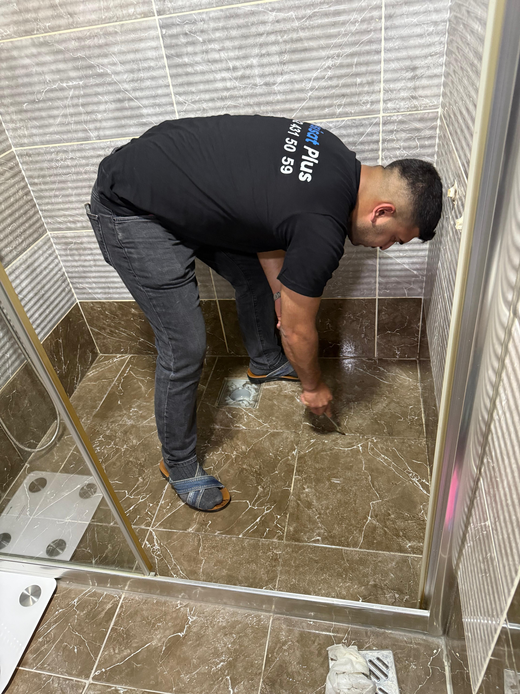
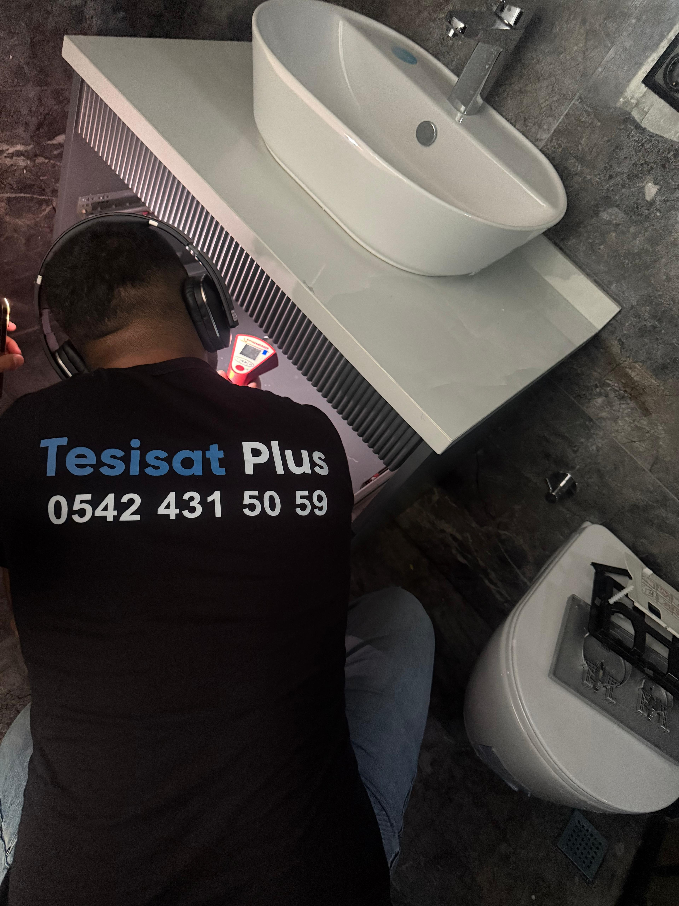

Çorlu Kırmadan Cihazla Su Kaçağı Bulma
Ev veya iş yerlerinizde meydana gelen su sızıntıları, alt katın tavanına damlayan sular veya rutubet sorunları can sıkıcı olabilir. Çorlu genelinde sunduğumuz profesyonel su sızıntısı arama hizmetimiz ile bu sorunları en modern teknolojilerle çözüyoruz.
Duvarların arkasında veya şap betonunun altında kalan borulardaki kaçakların yerini bulmak için akustik dinleme cihazları ve hassas termal kameralar kullanıyoruz. Böylece gereksiz kırma dökme işlemleri yapmadan nokta atışı tespit gerçekleştiriyoruz.

Kameralı ve akustik cihazlarla noktasal su kaçağı tespiti

Ev ve iş yerlerinde kırmadan dökmeden sızıntı tespiti ve onarımı
Su Kaçağı Belirtileri Nelerdir?
Evinizde görünmeyen bir su sızıntısı olduğunu şu belirtilerden anlayabilirsiniz:
- Normalden yüksek gelen su faturaları
- Duvarlarda veya tavanlarda oluşan rutubet ve nem lekeleri
- Banyo ve tuvalet tavanında sararma veya damlama
- Parkelerde kabarma veya alt kısımdan gelen nem kokusu
- Su vanaları kapalı olduğu halde su sayacının dönmeye devam etmesi
Neden Tesisat Plus'ı Tercih Etmelisiniz?
- 7/24 Acil Mobil Tesisatçı Servisi
- Kırmadan, Dökmeden İleri Cihazlarla Noktasal Tespit
- Alanında Uzman, Sertifikalı Profesyonel Ekip
- Yapılan Onarımlarda Uygun Fiyat ve Garanti
- Çorlu ve Çevre İlçelerin Tamamına Hızlı Hizmet
 WhatsApp'tan Yaz
WhatsApp'tan Yaz